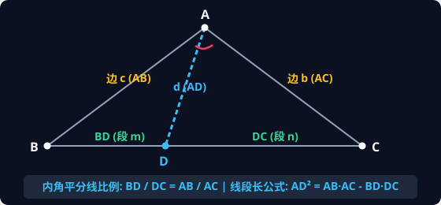
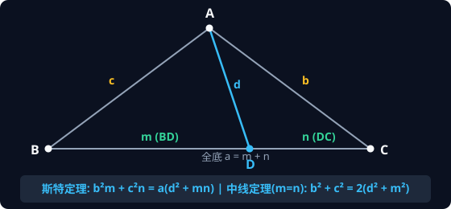
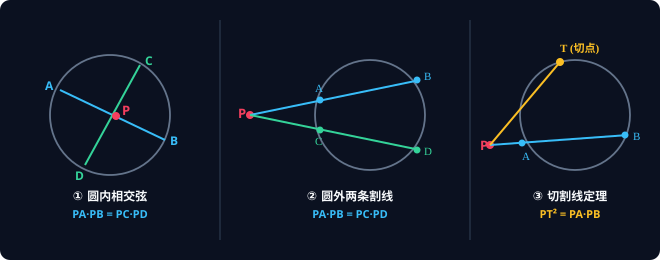
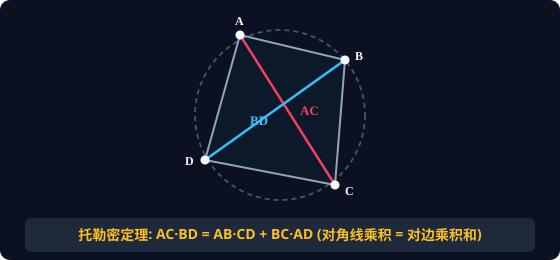
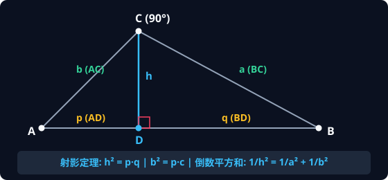
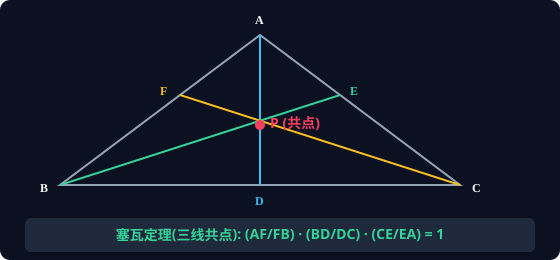

专为初二（8年级）信息学算法特长生定制 · 告别生硬死背 · 深度打通五大几何母定理、全域变式与实战秒杀
| 编号 | 试卷名称 | 进度安排 | 在线交互做题 (罗博深题库) | 全球高手逐题秒杀 (AoPS Wiki) | 当年 AIME 晋级线 | 目标 |
|---|---|---|---|---|---|---|
| 01 | 2022 AMC 10A | 第 1 周 | 🚀 在线计时全真模考 | 📖 查看 AoPS 题解 | 93.0 分 | 摸底脱敏 |
| 02 | 2022 AMC 10B | 第 1 周 | 🚀 在线计时全真模考 | 📖 查看 AoPS 题解 | 94.5 分 | 稳住前15题 |
| 03 | 2023 AMC 10A | 第 2 周 | 🚀 在线计时全真模考 | 📖 查看 AoPS 题解 | 103.5 分 | 攻克数论组合 |
| 04 | 2023 AMC 10B | 第 2 周 | 🚀 在线计时全真模考 | 📖 查看 AoPS 题解 | 105.0 分 | 冲进 AIME |
| 05 | 2024 AMC 10A | 第 3 周 | 🚀 在线计时全真模考 | 📖 查看 AoPS 题解 | ~102 分 | 几何扫盲 |
| 06 | 2024 AMC 10B | 第 3 周 | 🚀 在线计时全真模考 | 📖 查看 AoPS 题解 | ~100 分 | 考场压迫感模拟 |
| 07 | 2025 AMC 10A | 第 4 周 | 🚀 在线计时全真模考 | 📖 查看 AoPS 题解 | 官方线 | 终极实战演练 |
| 08 | 2025 AMC 10B | 第 4 周 | 🚀 在线计时全真模考 | 📖 查看 AoPS 题解 | 官方线 | 巅峰状态上考场 |

在 $\triangle ABC$ 中，$AD$ 为 $\angle A$ 的内角平分线，交对边 $BC$ 于点 $D$。记 $AB=c, AC=b, BD=m, DC=n$。则：

在 $\triangle ABC$ 中，$D$ 为底边 $BC$ 上任意一点。记 $BC=a, AC=b, AB=c, AD=d, BD=m, CD=n$（满足 $a = m + n$）。则恒有：
口诀："A man and his dad put a bomb in the sink." ($man + dad = bmb + cnc$)

点 $P$ 到圆心 $O$ 距离为 $d$，圆半径为 $R$。圆幂定义为 $\text{Pow}(P) = d^2 - R^2$。过点 $P$ 引任意交圆于 $A, B$ 的直线，其距离积恒守恒：

在任意圆内接四边形 $ABCD$ 中：两条对角线的乘积 = 两组对边乘积之和：

在 Rt$\triangle ABC$ 中，$\angle C = 90^\circ$，$CD \perp AB$ 于 $D$（$CD=h, AD=p, BD=q, AB=c$）：

三条塞瓦线 $AD, BE, CF$ 交于同一点 $P$ 的充要条件是：
口诀：“顶到分，分到顶；绕着三边转一圈，顺次乘积等于 1！”
| 题目给出的特征几何信息 | 脑海中第一反应调用的工具 | 关键公式 |
|---|---|---|
| 看到 内角 / 外角平分线 + 线段长 | 角平分线定理及长度公式 | $\frac{m}{n} = \frac{c}{b}, \quad AD^2 = bc - mn$ |
| 看到 底边上线段分点，求线段长 | 斯特瓦尔特定理 (Stewart) | $b^2 m + c^2 n = a(d^2 + mn)$ |
| 看到 三角形中线，求边长或中线 | 阿波罗尼奥斯中线定理 | $b^2 + c^2 = 2(m_a^2 + a^2/4)$ |
| 看到 圆 + 两相交直线 / 切线 | 圆幂定理 (Power of a Point) | $PA \cdot PB = PC \cdot PD = PT^2$ |
| 看到 圆内接四边形对角线 / 边长 | 托勒密定理 (Ptolemy) | $AC \cdot BD = AB \cdot CD + BC \cdot AD$ |
| 看到 正五边形求对角线 / 黄金分割 | 托勒密构造二次方程 | $d^2 - d - 1 = 0 \implies d = \frac{\sqrt{5}+1}{2}$ |
| 看到 直角三角形斜边高 | 射影定理与高线倒数平方和 | $h^2 = pq, \quad \frac{1}{h^2} = \frac{1}{a^2} + \frac{1}{b^2}$ |
| 看到 三线共点 / 三点共线 | 塞瓦定理 / 梅涅劳斯定理 | 绕行三边比值之积等于 1 |